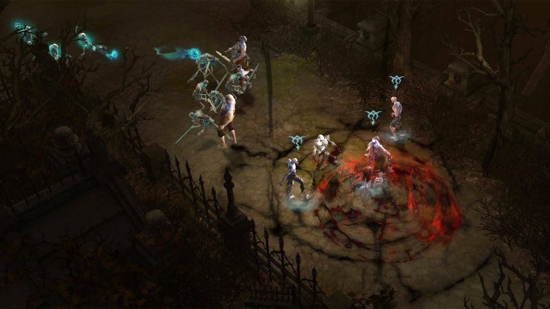
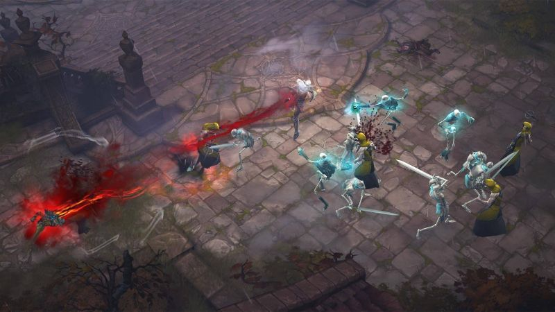
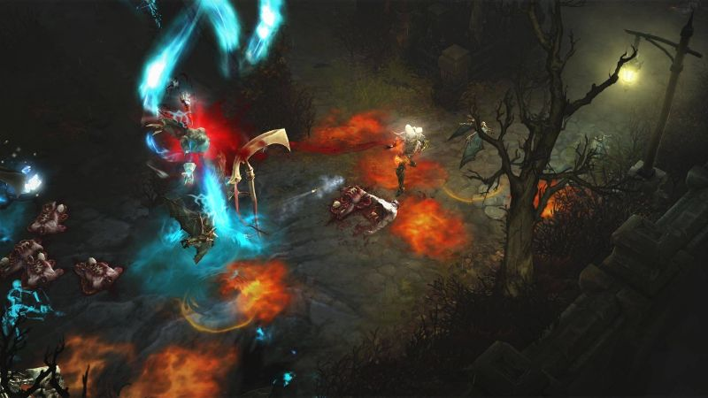
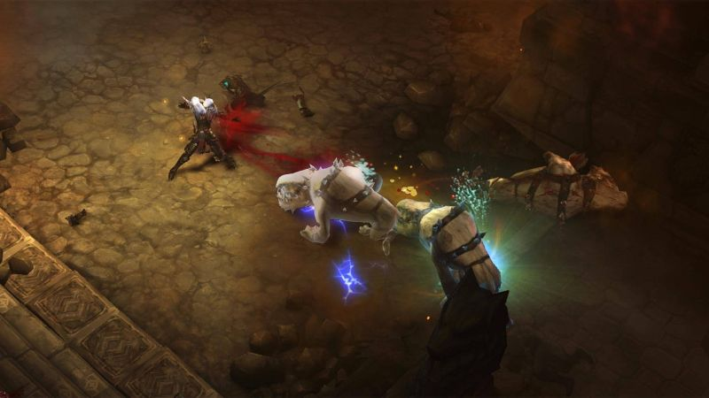
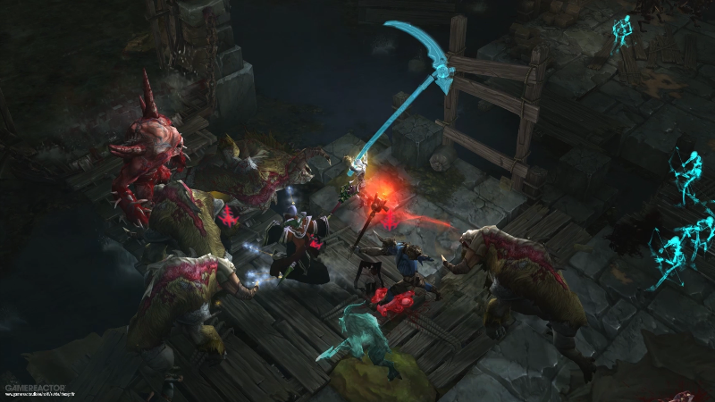

Necromancers are ruthless commanders, and masters of life and death. These dark spellcasters reanimate the dead as skeletal remains, curse their enemies with deadly magics, and further torment them with the carcasses of their defeated fellows.
Life and death are part of a greater cycle, and necromancers are not afraid to walk the line between both. They willfully use their own life force to fuel powerful abilities and gain the upper hand in combat. Being at death’s door does not concern them if no adversaries remain to deal the killing blow.
Necromancers prefer to strike from a distance, unleashing destruction from afar. The skeletal undead under their command overwhelm enemies before they have a chance to strike, and the horrific curses the necromancers employ cripple even the most resistant of demons.
"All who oppose me...beware."
The Priests of Rathma—also known as Necromancers—live and die by a simple philosophy: that the eternal struggle between light and darkness is never-ending, and that Sanctuary is threatened by both sides of that war. Only by preserving the balance and keeping those opposing forces at bay, one can hope to make the world a better place.
Members of this order are unique , and often reviled for their use of death magic. Though such power is often abused in Sanctuary, the Priests of Rathma strive to use it to preserve to the Balance they hold sacred.
When they do venture out from their home deep within the jungles of Kehjistan, roving Priests of Rathma do whatever it takes to safeguard their world from ruin.
Newly anointed Priests of Rathma cannot afford to be picky. They dress in basic robes, dark clothing that protects as much as thin vellum and light weaponry—whatever they can scrounge from defeated enemies.
Adroit necromancers face more dangerous foes, and thus exercise more care in protecting exposed areas of their bodies with resistant shoulderpads, leather tunics, and shinguards.
Elite Priests of Rathma are frightful visages of calcified bone and marrow, covered head to toe in thick armor that’s resistant even to the most terrifying demons.